When working with drift-diffusion models (DDMs) you probably want to:
Build a new model or select an existing model
Explore the model behavior and validate that model parameters are estimated reliably
Fit the model to data
Explore the model fit
The dRiftDM package helps you to do this:
With dedicated functions and workflows
Options to customize models
With efficient algorithms to derive the model predictions for time-dependent DDMs (see Richter, Ulrich, and Janczyk 2023)
Three pre-built models are currently available:
The Ratcliff Diffusion Model (see
ratcliff_dm(), Ratcliff 1978)The Diffusion Model for Conflict Tasks (see
dmc_dm(), Ulrich et al. 2015; Janczyk, Mackenzie, and Koob 2024)The Shrinking Spotlight Model (see
ssp_dm(), White, Ratcliff, and Starns 2011)
This document introduces you to dRiftDM, focusing on first steps in exploring and fitting a DDM.
An Examplary Model
To explore some of the basic functions of dRiftDM, we’ll use the
Diffusion Model for Conflict Tasks (DMC). It is a diffusion model
commonly employed in the context of cognitive psychology. To create the
model, we call the pre-built function dmc_fun() and assign
its output to a variable:
ddm <- dmc_dm()Basic Properties of a Model
When printing a model to the console, we obtain detailed information about it:
print(ddm)
#> Class(es) dmc_dm, drift_dm
#> (model has not been estimated yet)
#>
#> Parameter Values:
#> muc b non_dec sd_non_dec tau a A alpha
#> comp 4 0.6 0.3 0.02 0.04 2 0.1 4
#> incomp 4 0.6 0.3 0.02 0.04 2 -0.1 4
#>
#> Parameter Settings:
#> muc b non_dec sd_non_dec tau a A alpha
#> comp 1 2 3 4 5 0 6 7
#> incomp 1 2 3 4 5 0 d 7
#>
#> Special Dependencies:
#> A ~ incomp == -(A ~ comp)
#>
#> Custom Parameters:
#> peak_l
#> comp 0.04
#> incomp 0.04
#>
#> Deriving PDFS:
#> solver: kfe
#> values: sigma=1, t_max=3, dt=0.0075, dx=0.02, nt=400, nx=100
#>
#> Cost Function: neg_log_like
#>
#> Observed Data: NULLHere we get a glimpse on the underlying structure of any model created with dRiftDM. For DMC this is:
The model is of type
dmc_dmThe model has the parameters
muc,b, …,alpha, and the current parameter values for each conditions are shown underParameter Values. The conditions arecompandincompin this case.Below this, under
Parameter Settings, we obtain how each parameter behaves across conditions. If a number is the same for a parameter across conditions, this means that this parameter is equated across conditions. For example, the parametermucis assumed to be identical for the conditionscompandincomp. If a number is zero, this means that this parameter is assumed to be “fixed” and thus is not a “free” parameter that can be estimated. If an entry shows a “d”, this means there is a special dependency, as listed underSpecial Dependencies(seevignette("customize_ddms", "dRiftDM")for more information).When fitting or exploring a model, we will have to derive the model predictions in terms of the first-passage-times (i.e., the duration of central response selection in the context of psychology). The settings for this are shown under
Deriving PDFs. Currently, predictions are derived by a numerical discretization of the Kolmogorov-Forward-Equation (kfe). The diffusion constantsigmais 1, the maximum time space is 3 seconds, and the discretization in time and space is done in steps of .0075 and .02, respectively.Finally, under
Cost Function, we can see the goal function that is used to compare observed data (not yet part of the model) and the model predictions. Per default, this cost function is thenegative log-likelihood.
Exploring a Model
To explore a model, dRiftDM provides:
simulate_traces()simulates realizations of the diffusion processcalc_stats()calculates summary statistics of model predictions
simulate_traces()
Realizations of a diffusion process, that is, single evidence accumulation traces for central response selection, are common ways to visualize a diffusion model. The first argument requires the model object. The second argument requires the number of realizations to simulate.
For example, we could simulate 5 traces for DMC per condition:
five_traces <- simulate_traces(object = ddm, k = 5)
five_traces
#> Class(es): traces_dm_list
#>
#> Time space:
#> 0.000, 0.007, 0.015, 0.022 ... 3.000
#>
#> Condition: comp
#> ~> 0.000, -0.040, 0.046, -0.113 ... 0.664
#> ~> 0.000, 0.008, -0.011, 0.129 ... 0.660
#> ~> 0.000, 0.036, 0.174, 0.255 ... 0.634
#> ~> 0.000, 0.020, 0.067, 0.184 ... 0.773
#> ...
#>
#> Condition: incomp
#> ~> 0.000, -0.073, -0.105, -0.070 ... 0.656
#> ~> 0.000, 0.048, 0.106, 0.087 ... 0.665
#> ~> 0.000, -0.013, 0.023, -0.046 ... 0.621
#> ~> 0.000, 0.015, -0.091, -0.080 ... 0.610
#> ...Per default, traces are simulated by assuming a fixed starting value
of zero. To simulate traces with a variable starting point (if provided
by model), we can set the argument add_x = TRUE:
five_traces <- simulate_traces(object = ddm, k = 5, add_x = TRUE)
five_traces
#> Class(es): traces_dm_list
#>
#> Time space:
#> 0.000, 0.007, 0.015, 0.022 ... 3.000
#>
#> Condition: comp
#> ~> -0.288, -0.141, -0.166, -0.188 ... 0.647
#> ~> -0.168, 0.024, -0.022, 0.026 ... 0.633
#> ~> 0.144, 0.018, 0.060, 0.150 ... 0.672
#> ~> 0.072, 0.279, 0.460, 0.487 ... 0.682
#> ...
#>
#> Condition: incomp
#> ~> -0.144, -0.178, -0.149, -0.097 ... 0.686
#> ~> -0.192, -0.067, -0.054, -0.059 ... 0.632
#> ~> 0.264, 0.023, -0.088, 0.014 ... 0.630
#> ~> -0.024, -0.078, -0.165, -0.167 ... 0.679
#> ...In the context of DMC, starting values of the traces are drawn from a symmetric beta distribution (see Ulrich et al. 2015).
We can easily visualize these traces by calling the generic
plot() method:
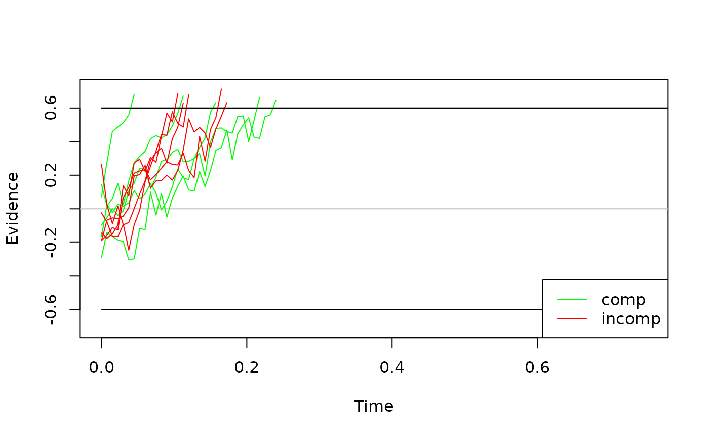
If you would like diffusion processes with a higher temporal
resolution (e.g., for a nice publication-ready figure), simply increase
dt (see the next chapter below) and run
simulate_traces() once more.
When visualizing the basic model behavior, one sometimes wants to
display the expected time-course of the diffusion process. We can do so
by eliminating the stochastic noise with setting the argument
sigma = 0.
exp_behavior <- simulate_traces(object = ddm, k = 1, sigma = 0)
plot(exp_behavior, col = c("green", "red"))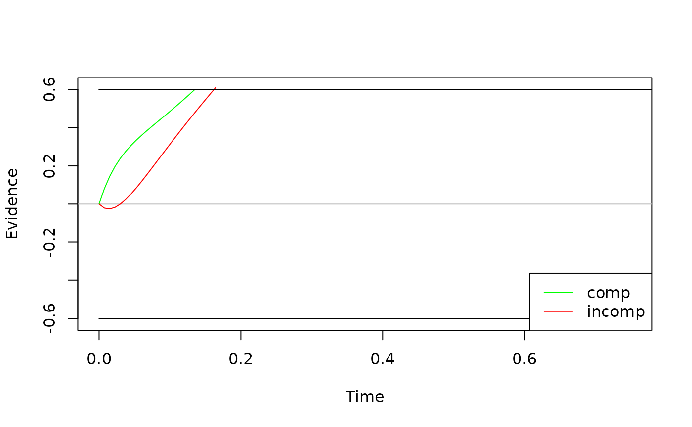
Note: When deriving the diffusion processes, dRiftDM
simply uses the Euler-Maruyama method with a fixed time step size of
dt. When actually deriving model predictions via the
Kolmogorov-Forward-Equation, however, dRiftDM uses a
dynamic time-stepping scheme to ensure high numerical accuracy even with
relatively coarse settings for dt. Thus, if the model’s
drift rate varies strongly and dt is large, the expected
time course via simulate_traces() might not match the
predicted model behavior.
calc_stats()
A DDM predicts response choices and response times, with the latter
being the sum of the first-passage-time (i.e., the duration of central
response selection) and the non-decision time. We can request summary
statistics of this prediction with calc_stats(). The first
argument requires the model object. The second argument a character
vector, specifying the type of summary statistic.
In the context of cognitive psychology, quantiles and so-called Conditional Accuracy Functions (CAFs) are common ways to summarize the model predictions:
sum_stats <- calc_stats(object = ddm, type = c("cafs", "quantiles"))
sum_stats
#> Element 1, contains cafs
#>
#> Source Cond Bin P_corr
#> 1 pred comp 1 0.983
#> 2 pred comp 2 0.983
#> 3 pred comp 3 0.981
#> 4 pred comp 4 0.984
#> 5 pred comp 5 0.989
#> 6 pred incomp 1 0.835
#> 7 pred incomp 2 0.971
#> 8 pred incomp 3 0.986
#> 9 pred incomp 4 0.991
#> 10 pred incomp 5 0.992
#>
#>
#> Element 2, contains quantiles
#>
#> Source Cond Prob Quant_corr Quant_err
#> 1 pred comp 0.1 0.325 0.321
#> 2 pred comp 0.2 0.346 0.343
#> 3 pred comp 0.3 0.364 0.362
#> 4 pred comp 0.4 0.384 0.380
#> 5 pred comp 0.5 0.406 0.398
#> 6 pred comp 0.6 0.433 0.419
#> 7 pred comp 0.7 0.465 0.443
#> 8 pred comp 0.8 0.507 0.476
#> 9 pred comp 0.9 0.574 0.531
#> 10 pred incomp 0.1 0.352 0.301
#> ...
#>
#> (extract the list's elements as usual, e.g., with $cafs)We can visualize summary statistics with the plot()
method:
plot(sum_stats) 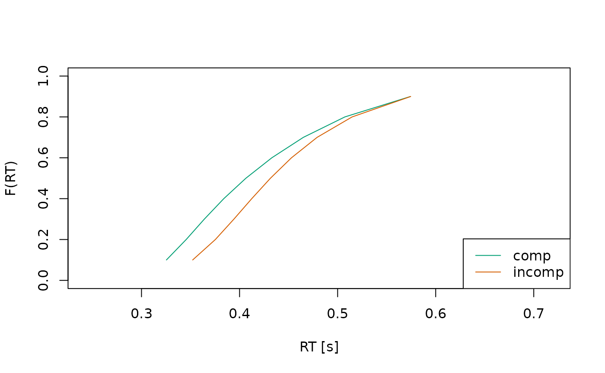
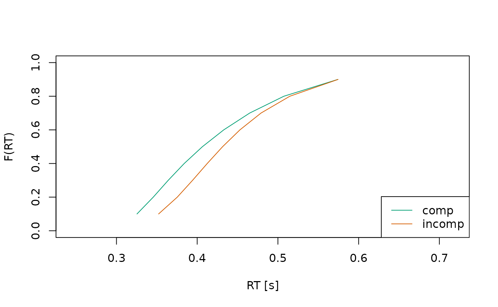
It is also possible to plot the predicted response time distributions
using type = "densities".
sum_stats <- calc_stats(object = ddm, type = c("densities"))
sum_stats
#> Type of Statistic: densities
#>
#> Source Cond Stat Time Dens_corr Dens_err
#> 1 pred comp pdf 0.000 0 0
#> 2 pred comp pdf 0.007 0 0
#> 3 pred comp pdf 0.015 0 0
#> 4 pred comp pdf 0.022 0 0
#> 5 pred comp pdf 0.030 0 0
#> 6 pred comp pdf 0.038 0 0
#> 7 pred comp pdf 0.045 0 0
#> 8 pred comp pdf 0.052 0 0
#> 9 pred comp pdf 0.060 0 0
#> 10 pred comp pdf 0.068 0 0
#> ...
#>
#> (access the data.frame's columns/rows as usual)In this case, it’s often helpful to plot the distributions separately for each condition, so they don’t overlap too much:
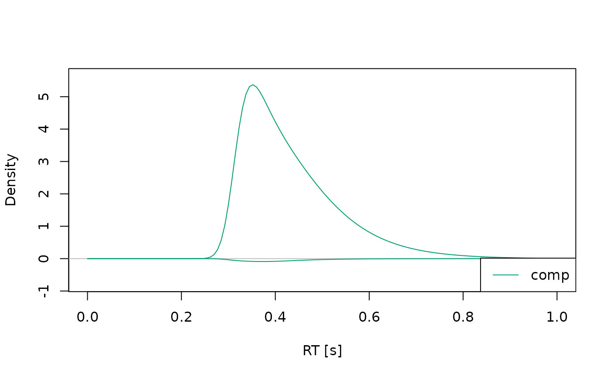
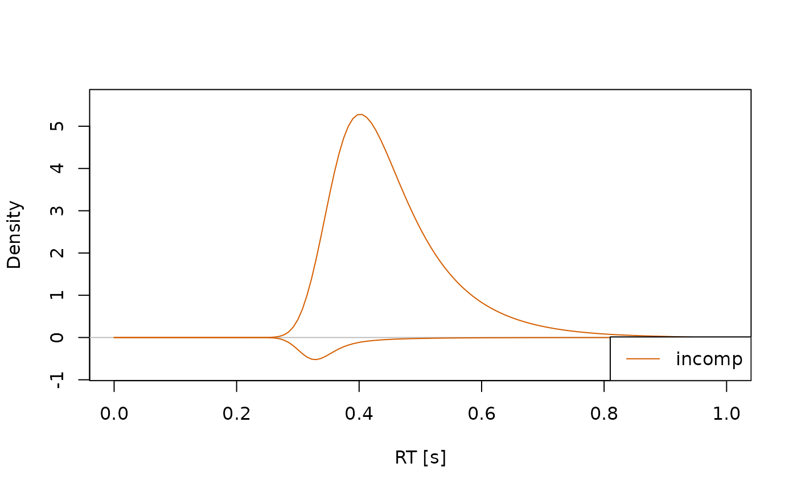
Changing Model Properties
To get or set properties of the model, dRiftDM provides accessor/replacement methods for:
coef()accesses/replaces parameter valuesprms_solve()accesses/replaces settings for deriving model predictions (this also includes changing the diffusion constant)solver()accesses/replaces the method for deriving model predictions (not really necessary anymore, the defaultkfeis well enough!)b_coding()accesses/replaces the coding of the upper and lower boundaryobs_data()accesses/replaces the data set (of a single participant) attached to the modelflex_prms()accesses/replaces the object that controls how each parameter relates across conditionsconds()accesses/replaces the conditions of a modelcomp_funs()accesses/replaces the underlying component functions for the drift rate, boundary, etc.cost_function()accesses/replace the cost function used for parameter optimization.
Note: comp_funs(), flex_prms(), and
conds() are covered in
vignette("customize_ddms", "dRiftDM").
coef()
coef(ddm)
#> muc b non_dec sd_non_dec tau A alpha
#> 4.00 0.60 0.30 0.02 0.04 0.10 4.00This returns a unique representation of the parameters and their associated values. Note that this drops parameters that are not estimable.
We can combine coef() with the [] operator
to change the values of the parameters:
coef(ddm)["muc"] <- 5
coef(ddm)
#> muc b non_dec sd_non_dec tau A alpha
#> 5.00 0.60 0.30 0.02 0.04 0.10 4.00To request the entire parameter matrix with all parameter values
across conditions, we can set the argument
select_unique = FALSE:
coef(ddm, select_unique = FALSE)
#> muc b non_dec sd_non_dec tau a A alpha peak_l
#> comp 5 0.6 0.3 0.02 0.04 2 0.1 4 0.04
#> incomp 5 0.6 0.3 0.02 0.04 2 -0.1 4 0.04In this case, we can not combine coef() with the
[] operator. To change a parameter value for a specific
condition, we can use the function modify_flex_prms().
prms_solve()
prms_solve(ddm)
#> sigma t_max dt dx nt nx
#> 1.0e+00 3.0e+00 7.5e-03 2.0e-02 4.0e+02 1.0e+02This shows the diffusion constant and the discretization settings. We
can again use a combination with [] to modify these
values.
prms_solve(ddm)["dt"] <- .005
prms_solve(ddm)
#> sigma t_max dt dx nt nx
#> 1e+00 3e+00 5e-03 2e-02 6e+02 1e+02Remark: Discretization Settings
Setting the discretization, in particluar for dt and
dx, is a tricky choice. If you create a new model (see the
vignette("customize_ddms", "dRiftDM")), dRiftDM discretizes
the time and evidence space in steps of dx = dt = 0.001.
This is a very conservative setting, ensuring high numerical accuracy
for many DDMs. Yet, this high numerical accuracy comes at the expense of
a high computational burden that increases non-linearly.
For the models that are pre-built (i.e., for dmc_dm(),
ssp_dm(), and ratcliff_dm()), we have
conducted extensive simulations to find a discretization that provides a
good balance between speed and accuracy. However, these settings will
not hold for all models that you might create with dRiftDM.
It is thus highly recommended for custom models to perform some
exploratory model simulations under different discretization and
parameter setttings. As a rule of thumb, we currently recommend
exploring dt values between 0.001 and 0.01, and
dx values between 0.001 and 0.02.
Another choice is the maximum time space. It should be large enough to easily cover the longest response time in the observed data set.
A helpful function to check the impact of the discretization setting,
in particular for dt and dx is the
check_discretization() function. This function takes a
model (with some values for dt and dx) and
compares the model predictions with these settings against model
predictions obtained under very fine discretization settings using the
Hellinger-Distance.
check_discretization(ddm)
#> comp incomp
#> 0.01027 0.01431we can interpret the result as a percentage of deviance. If the model predictions under fine and a more coarse settings are exactly the same, the returned values will be zero. If they are completely different, they will be one. From our own (yet preliminary) experience, we would recommend keeping the Hellinger Distance clearly below 5 percent for most of the relevant parameter settings.
solver()
solver(ddm)
#> [1] "kfe"This shows the currently set method for deriving the model’s
predicted probability density functions of response time and choice.
Currently supported options are "kfe" and
"im_zero". While the "kfe" method can be
applied to all models in dRiftDM, "im_zero" can only be
used when the starting point is fixed to zero. Also,
"im_zero" currently doesn’t support adaptive time stepping,
and requires finer discretization. Thus, for now, "im_zero"
is only present for backward compatibility, and we recommend using the
"kfe" solver.
b_coding()
b_coding(ddm)
#> $column
#> [1] "Error"
#>
#> $u_name_value
#> corr
#> 0
#>
#> $l_name_value
#> err
#> 1This returns a list that specifies how the boundaries of a DDM are coded. We can change the boundary coding by modifying the returned list:
copy <- ddm # to not change the original model object
b_coding(copy)$column <- "Response"
b_coding(copy)$u_name_value <- c("left" = -1)
b_coding(copy)$l_name_value <- c("right" = 1)
b_coding(copy)
#> $column
#> [1] "Response"
#>
#> $u_name_value
#> left
#> -1
#>
#> $l_name_value
#> right
#> 1Changing the boundary coding makes sense if the response choices of your observed data is not accuracy coded.
Note that this will also alter the column names of the summary statistics:
calc_stats(copy, "quantiles")
#> Type of Statistic: quantiles
#>
#> Source Cond Prob Quant_left Quant_right
#> 1 pred comp 0.1 0.321 0.310
#> 2 pred comp 0.2 0.339 0.327
#> 3 pred comp 0.3 0.355 0.342
#> 4 pred comp 0.4 0.371 0.357
#> 5 pred comp 0.5 0.388 0.373
#> 6 pred comp 0.6 0.408 0.390
#> 7 pred comp 0.7 0.433 0.409
#> 8 pred comp 0.8 0.466 0.435
#> 9 pred comp 0.9 0.517 0.476
#> 10 pred incomp 0.1 0.345 0.297
#> ...
#>
#> (access the data.frame's columns/rows as usual)
obs_data()
We can set observed data of a single individual to a model (or access
it) with obs_data(). When setting observed data, we have to
make sure that the supplied data.frame provides columns
matching with the boundary coding and the conditions of the model.
data <- dRiftDM::dmc_synth_data # some synthetic data suitable for DMC that ships with dRiftDM
# the Cond column matches with conds(ddm).
# The Error column matches b_coding(ddm)
# the RT column is in seconds ;)
head(data)
#> RT Error Cond
#> 1 0.349 0 comp
#> 2 0.444 0 comp
#> 3 0.441 0 comp
#> 4 0.572 0 comp
#> 5 0.438 0 comp
#> 6 0.535 0 comp
obs_data(ddm) <- dataNote that the supplied data set is not stored “as is” within the model object. Thus, when accessing a data set of a model, the data is re-assembled, and this might change the order of rows or column with respect to the original data set. To remind you of that, a message is thrown.
The summary() Function
We can request a detailed summary of the model, providing information
about it’s core properties with the generic summary()
function:
summary(ddm)
#> Class(es) dmc_dm, drift_dm
#>
#> Parameter Values:
#> muc b non_dec sd_non_dec tau a A alpha
#> comp 5 0.6 0.3 0.02 0.04 2 0.1 4
#> incomp 5 0.6 0.3 0.02 0.04 2 -0.1 4
#>
#> Parameter Settings:
#> muc b non_dec sd_non_dec tau a A alpha
#> comp 1 2 3 4 5 0 6 7
#> incomp 1 2 3 4 5 0 d 7
#>
#> Special Dependencies:
#> A ~ incomp == -(A ~ comp)
#>
#> Custom Parameters:
#> peak_l
#> comp 0.04
#> incomp 0.04
#>
#> Observed Data:
#> min. 1st qu. median mean 3rd qu. max. n
#> corr comp 0.331 0.436 0.479 0.507 0.549 1.075 292
#> corr incomp 0.313 0.474 0.528 0.543 0.592 0.879 268
#> err comp 0.428 0.458 0.526 0.564 0.621 0.871 8
#> err incomp 0.302 0.398 0.452 0.458 0.498 0.771 32
#>
#> Fit Indices:
#> Log_Like Neg_Log_Like AIC BIC RMSE_s RMSE_ms
#> -180.145 180.145 374.290 405.069 0.107 106.502
#>
#> -------
#> Deriving PDFS:
#> solver: kfe
#> values: sigma=1, t_max=3, dt=0.005, dx=0.02, nt=600, nx=100
#>
#> Boundary Coding:
#> upper: corr
#> lower: err
#> expected data column: Error (corr = 0; err = 1)Fitting a Model
To fit a model to observed data we can use
estimate_dm(). We can choose between:
Fitting a model separately to multiple participants using classical optimization (i.e., minimizing a cost function)
Fitting a model to aggregated data (i.e., first aggregate data across individuals and then fit the model once by minimizing a cost function based on summary statistics)
Fitting a model separately to multiple participants using Bayesian estimation (i.e., explore the posterior distribution using Markov-Chain Monte-Carlo; experimental)
Fitting a model hierarchically using Bayesian estimation (experimental)
Fitting a Model Separately to Individual Data Using Classical Optimization Techniques
Given a data set, the parameters of a model in dRiftDM are estimated via Differential Evolution, (bounded) Nelder-Mead, or (bounded) Broyden-Fletcher-Goldfarb-Shanno. The cost function is based either on the log-likelihood or the Root-Mean-Squared-Error (RMSE) statistic.
The first argument drift_dm_obj requires the model. The
second argument obs_data requires some observed data with 4
columns:
-
ID: an identifier, coding the different individuals -
RT: observed response times in seconds -
Error: observed errors/choices per trial (remember that this column and its values must match with the boundary coding of your model!) -
Cond: the conditions of each trial (within-participants only; must match with the conditions of your model)
drift_dm_obj and obs_data are the only
mandatory arguments! However, as we will see in a second, specifying
some of the remaining arguments is often highly recommended. For
demonstration purpose, we will fit the first four individuals of the
Simon data set provided by Ulrich et al.
(2015).
# get some data (here we use a Simon data set provided by Ulrich et al.)
data <- dRiftDM::ulrich_simon_data
data <- data[data$ID %in% 1:4, ] # just the first four individuals
# get a model (here we again use the pre-built DMC model)
ddm <- dmc_dm()
# the provided data is ready-to-use with DMC
head(data)
#> ID RT Error Cond
#> 1 1 0.4514001 0 incomp
#> 2 1 0.5348854 0 incomp
#> 3 1 0.4680900 0 incomp
#> 4 1 0.4346847 0 comp
#> 5 1 0.3847005 0 comp
#> 6 1 0.4347649 0 incomp
# now call the estimation routine
all_fits <- estimate_dm(
drift_dm_obj = ddm,
obs_data = data,
verbose = 1 # prints more information about the underlying optimization run
)
#> Using the data supplied via the 'obs_data' argument.
#> Using optimizer 'Nelder-Mead'.
#> Fitting the model separately to multiple participants (cost function:'neg_log_like'). The result will be a fit object of type 'fits_ids_dm'.
#> Starting optimizer 'Nelder-Mead' with the following starting values:
#> muc=4, b=0.6, non_dec=0.3, sd_non_dec=0.02, tau=0.04, A=0.1, alpha=4
#> Warning in estimate_classical(drift_dm_obj = one_model_start$drift_dm_obj, :
#> The optimization routine did not converge successfully (convergence message:
#> maxit reached). Treat the estimated parameters with some caution.
#> Optimization routine exited after 501 function evaluations
#> Final Parameters
#> muc = 4.277
#> b = 0.447
#> non_dec = 0.308
#> sd_non_dec = 0.022
#> tau = 0.02
#> A = 0.114
#> alpha = 5.289
#> ==> gave a neg_log_like of -418.653
#> Starting optimizer 'Nelder-Mead' with the following starting values:
#> muc=4, b=0.6, non_dec=0.3, sd_non_dec=0.02, tau=0.04, A=0.1, alpha=4
#> Warning in estimate_classical(drift_dm_obj = one_model_start$drift_dm_obj, :
#> The optimization routine did not converge successfully (convergence message:
#> maxit reached). Treat the estimated parameters with some caution.
#> Optimization routine exited after 502 function evaluations
#> Final Parameters
#> muc = 4.116
#> b = 0.379
#> non_dec = 0.303
#> sd_non_dec = 0.032
#> tau = 0.06
#> A = 0.046
#> alpha = 5.623
#> ==> gave a neg_log_like of -383.466
#> Starting optimizer 'Nelder-Mead' with the following starting values:
#> muc=4, b=0.6, non_dec=0.3, sd_non_dec=0.02, tau=0.04, A=0.1, alpha=4
#> Warning in estimate_classical(drift_dm_obj = one_model_start$drift_dm_obj, :
#> The optimization routine did not converge successfully (convergence message:
#> maxit reached). Treat the estimated parameters with some caution.
#> Optimization routine exited after 501 function evaluations
#> Final Parameters
#> muc = 5.427
#> b = 0.433
#> non_dec = 0.307
#> sd_non_dec = 0.019
#> tau = 0.059
#> A = 0.026
#> alpha = 4.426
#> ==> gave a neg_log_like of -508.639
#> Starting optimizer 'Nelder-Mead' with the following starting values:
#> muc=4, b=0.6, non_dec=0.3, sd_non_dec=0.02, tau=0.04, A=0.1, alpha=4
#> Warning in estimate_classical(drift_dm_obj = one_model_start$drift_dm_obj, :
#> The optimization routine did not converge successfully (convergence message:
#> maxit reached). Treat the estimated parameters with some caution.
#> Optimization routine exited after 502 function evaluations
#> Final Parameters
#> muc = 2.863
#> b = 0.537
#> non_dec = 0.302
#> sd_non_dec = 0.034
#> tau = 0.051
#> A = 0.101
#> alpha = 2.761
#> ==> gave a neg_log_like of -172.322
#> Warning in estimate_classical_wrapper(drift_dm_obj = drift_dm_obj, obs_data_ids = obs_data, : The optimization routine did not converge successfully for the following IDs: 1, 2, 3, 4
#> Summary of messages:
#> - maxit reachedFrom the messages, it becomes clear that dRiftDM used
the “Nelder-Mead” optimization algorithm to minimize the negative
log-likelihood. The starting values were taken from the model:
coef(ddm)
#> muc b non_dec sd_non_dec tau A alpha
#> 4.00 0.60 0.30 0.02 0.04 0.10 4.00However, while the code runs, it threw convergence warnings for each
individual. Thus, while searching for the “optimal” parameters, the
optimization algorithm could not find a clear minimum after
502 function evaluations. To get rid of the convergence
warning, we could:
- Switch the optimization algorithm
- Let the optimization algorithm search for a longer period.
Let’s try the second option first. To configure the settings of an
optimization algorithm, we can use the control argument
(which is ultimately passed forward to stats::optim() in
this case; see the documentation of estimate_dm() for more
info).
all_fits <- estimate_dm(
drift_dm_obj = ddm,
obs_data = data,
control = list(maxit = 2000), # 2000 iterations; see stats::optim
verbose = 1 # more information about the underlying optimization run
)
#> Using the data supplied via the 'obs_data' argument.
#> Using optimizer 'Nelder-Mead'.
#> Fitting the model separately to multiple participants (cost function:'neg_log_like'). The result will be a fit object of type 'fits_ids_dm'.
#> Starting optimizer 'Nelder-Mead' with the following starting values:
#> muc=4, b=0.6, non_dec=0.3, sd_non_dec=0.02, tau=0.04, A=0.1, alpha=4
#> Optimization routine exited after 605 function evaluations
#> Final Parameters
#> muc = 4.274
#> b = 0.446
#> non_dec = 0.308
#> sd_non_dec = 0.022
#> tau = 0.02
#> A = 0.114
#> alpha = 5.294
#> ==> gave a neg_log_like of -418.653
#> Starting optimizer 'Nelder-Mead' with the following starting values:
#> muc=4, b=0.6, non_dec=0.3, sd_non_dec=0.02, tau=0.04, A=0.1, alpha=4
#> Optimization routine exited after 1214 function evaluations
#> Final Parameters
#> muc = 4.105
#> b = 0.378
#> non_dec = 0.303
#> sd_non_dec = 0.032
#> tau = 0.02
#> A = 0.058
#> alpha = 5.893
#> ==> gave a neg_log_like of -384.298
#> Starting optimizer 'Nelder-Mead' with the following starting values:
#> muc=4, b=0.6, non_dec=0.3, sd_non_dec=0.02, tau=0.04, A=0.1, alpha=4
#> Optimization routine exited after 699 function evaluations
#> Final Parameters
#> muc = 5.425
#> b = 0.433
#> non_dec = 0.307
#> sd_non_dec = 0.019
#> tau = 0.059
#> A = 0.025
#> alpha = 4.446
#> ==> gave a neg_log_like of -508.641
#> Starting optimizer 'Nelder-Mead' with the following starting values:
#> muc=4, b=0.6, non_dec=0.3, sd_non_dec=0.02, tau=0.04, A=0.1, alpha=4
#> Optimization routine exited after 598 function evaluations
#> Final Parameters
#> muc = 2.863
#> b = 0.537
#> non_dec = 0.302
#> sd_non_dec = 0.034
#> tau = 0.051
#> A = 0.101
#> alpha = 2.761
#> ==> gave a neg_log_like of -172.322Now the algorithm converges after about 600 to 1000 function evaluations.
What about the other option of switching the algorithm? Instead of
using “Nelder-Mead”, we could use “nmkb”. The “nmkb” optimization
algorithm is essentially “Nelder-Mead”, but it uses constraints on the
parameters to search a more clearly defined space (which sometimes
helps, but not always). We can request “nmkb” by using the arguments
optimizer and lower/upper.
For lower/upper, we have to define ranges for each
parameter that is considered free in at least one condition;
essentially, this means we have to define a range for each of the
following parameters:
coef(ddm)
#> muc b non_dec sd_non_dec tau A alpha
#> 4.00 0.60 0.30 0.02 0.04 0.10 4.00Fortunately, since dRiftDM v0.3.0 the function
get_lower_upper() makes it easier to select these ranges—at
least for the pre-built models and model components:
l_u <- get_lower_upper(ddm)
print(l_u)
#> $lower
#> muc b non_dec sd_non_dec tau A alpha
#> 0.5000 0.1500 0.1500 0.0075 0.0150 0.0050 2.0000
#>
#> $upper
#> muc b non_dec sd_non_dec tau A alpha
#> 9.00 1.20 0.60 0.10 0.25 0.30 8.00
all_fits_nmkb <- estimate_dm(
drift_dm_obj = ddm,
obs_data = data,
optimizer = "nmkb",
lower = l_u$lower,
upper = l_u$upper,
verbose = 1 # more information about the underlying optimization run
)
#> Using the data supplied via the 'obs_data' argument.
#> Using optimizer 'nmkb'.
#> Fitting the model separately to multiple participants (cost function:'neg_log_like'). The result will be a fit object of type 'fits_ids_dm'.
#> Starting optimizer 'nmkb' with the following starting values:
#> muc=4, b=0.6, non_dec=0.3, sd_non_dec=0.02, tau=0.04, A=0.1, alpha=4
#> Warning in estimate_classical(drift_dm_obj = one_model_start$drift_dm_obj, :
#> The optimization routine did not converge successfully (convergence message:
#> Maximum number of fevals exceeded). Treat the estimated parameters with some
#> caution.
#> Optimization routine exited after 1500 function evaluations
#> Final Parameters
#> muc = 4.317
#> b = 0.426
#> non_dec = 0.314
#> sd_non_dec = 0.027
#> tau = 0.02
#> A = 0.092
#> alpha = 4.929
#> ==> gave a neg_log_like of -420.083
#> Starting optimizer 'nmkb' with the following starting values:
#> muc=4, b=0.6, non_dec=0.3, sd_non_dec=0.02, tau=0.04, A=0.1, alpha=4
#> Optimization routine exited after 870 function evaluations
#> Final Parameters
#> muc = 4.265
#> b = 0.385
#> non_dec = 0.305
#> sd_non_dec = 0.032
#> tau = 0.024
#> A = 0.049
#> alpha = 4.117
#> ==> gave a neg_log_like of -384.243
#> Starting optimizer 'nmkb' with the following starting values:
#> muc=4, b=0.6, non_dec=0.3, sd_non_dec=0.02, tau=0.04, A=0.1, alpha=4
#> Optimization routine exited after 1374 function evaluations
#> Final Parameters
#> muc = 5.24
#> b = 0.445
#> non_dec = 0.302
#> sd_non_dec = 0.018
#> tau = 0.015
#> A = 0.068
#> alpha = 8
#> ==> gave a neg_log_like of -512.014
#> Starting optimizer 'nmkb' with the following starting values:
#> muc=4, b=0.6, non_dec=0.3, sd_non_dec=0.02, tau=0.04, A=0.1, alpha=4
#> Optimization routine exited after 915 function evaluations
#> Final Parameters
#> muc = 2.868
#> b = 0.525
#> non_dec = 0.305
#> sd_non_dec = 0.037
#> tau = 0.044
#> A = 0.115
#> alpha = 3.15
#> ==> gave a neg_log_like of -171.917
#> Warning in estimate_classical_wrapper(drift_dm_obj = drift_dm_obj, obs_data_ids = obs_data, : The optimization routine did not converge successfully for the following IDs: 1
#> Summary of messages:
#> - Maximum number of fevals exceeded
#> - Successful convergenceIn this case, we only saw a convergence warning for one participant. By increasing the number of iterations, this warning again disappears:
all_fits_nmkb <- estimate_dm(
drift_dm_obj = ddm,
obs_data = data,
optimizer = "nmkb",
lower = l_u$lower,
upper = l_u$upper,
control = list(maxfeval = 2000), # see dfoptim::nmkb
verbose = 1 # more information about the underlying optimization run
)
#> Using the data supplied via the 'obs_data' argument.
#> Using optimizer 'nmkb'.
#> Fitting the model separately to multiple participants (cost function:'neg_log_like'). The result will be a fit object of type 'fits_ids_dm'.
#> Starting optimizer 'nmkb' with the following starting values:
#> muc=4, b=0.6, non_dec=0.3, sd_non_dec=0.02, tau=0.04, A=0.1, alpha=4
#> Optimization routine exited after 1714 function evaluations
#> Final Parameters
#> muc = 4.317
#> b = 0.426
#> non_dec = 0.314
#> sd_non_dec = 0.027
#> tau = 0.02
#> A = 0.092
#> alpha = 4.929
#> ==> gave a neg_log_like of -420.083
#> Starting optimizer 'nmkb' with the following starting values:
#> muc=4, b=0.6, non_dec=0.3, sd_non_dec=0.02, tau=0.04, A=0.1, alpha=4
#> Optimization routine exited after 870 function evaluations
#> Final Parameters
#> muc = 4.265
#> b = 0.385
#> non_dec = 0.305
#> sd_non_dec = 0.032
#> tau = 0.024
#> A = 0.049
#> alpha = 4.117
#> ==> gave a neg_log_like of -384.243
#> Starting optimizer 'nmkb' with the following starting values:
#> muc=4, b=0.6, non_dec=0.3, sd_non_dec=0.02, tau=0.04, A=0.1, alpha=4
#> Optimization routine exited after 1374 function evaluations
#> Final Parameters
#> muc = 5.24
#> b = 0.445
#> non_dec = 0.302
#> sd_non_dec = 0.018
#> tau = 0.015
#> A = 0.068
#> alpha = 8
#> ==> gave a neg_log_like of -512.014
#> Starting optimizer 'nmkb' with the following starting values:
#> muc=4, b=0.6, non_dec=0.3, sd_non_dec=0.02, tau=0.04, A=0.1, alpha=4
#> Optimization routine exited after 915 function evaluations
#> Final Parameters
#> muc = 2.868
#> b = 0.525
#> non_dec = 0.305
#> sd_non_dec = 0.037
#> tau = 0.044
#> A = 0.115
#> alpha = 3.15
#> ==> gave a neg_log_like of -171.917When you provide lower/upper, the default is actually
not “nmkb”, but “DEoptim”. The ‘DE’ stands for Differential Evolution—a
slower but very robust optimization algorithm. If runtime is not
critical, we recommend using “DEoptim”, since it performs reliably even
when the cost function is complex (which is almost always the case with
DDMs).
all_fits_deoptim <- estimate_dm(
drift_dm_obj = ddm,
obs_data = data,
lower = l_u$lower,
upper = l_u$upper,
n_cores = 1 # you might want to increase this
)
#> Using the data supplied via the 'obs_data' argument.
#> Using optimizer 'DEoptim'.
#> Fitting the model separately to multiple participants (cost function:'neg_log_like'). The result will be a fit object of type 'fits_ids_dm'.Because DEoptim is time-consuming, it is recommended to use multiple
cores. You can set the desired number of cores using the
n_cores argument.1 To get the number of available cores, use
parallel::detectCores().
A common question concerns the number of cores to use. By default,
dRiftDM (v.0.3.0) parallelizes across individuals—that is,
one individual is fitted per core. Therefore, you should not specify
more cores than there are individuals. In the present toy example, this
limits the number of cores to four.
Additionally, the fitting process runs in batches. For instance, if
there are two cores and four individuals, dRiftDM first
fits the first two individuals and then the remaining two. In practice,
it is thus often convenient to choose a number of cores that divides the
number of individuals evenly (e.g., six cores for 18 individuals, 50
cores for 200 individuals).
It is also possible to parallelize within
individuals when using DEoptim (this is not the default).
In this case, fitting a single individual uses multiple cores. This
option can be useful when fitting only a few participants or when model
evaluation is relatively slow (i.e., when dt and
dx are small). Otherwise, the overhead of managing multiple
cores outweighs the computational burden per core. We can choose among
parallelization within and across individuals using the argument
parallelization_strategy.
Remark: Fitting Just One Individual
In all previous examples, the function estimate_dm()
returned an object of class fits_ids_dm, which contains all
the individual fits.
# Example
class(all_fits_deoptim)
#> [1] "fits_ids_dm"
print(all_fits_deoptim)
#> Fit approach: separately - classical
#> Fitted model type: dmc_dm, drift_dm
#> Optimizer: DEoptim
#> Convergence: TRUE
#> N Individuals: 4
#> Average Trial Numbers:
#> 167 trials comp; 168 trials incomp
#> Cost Function: neg_log_likeA special case occurs when fitting only a single individual. In this
case, dRiftDM returns the model object itself, including
the data and the updated parameters for that individual. This behavior
is maintained for backward compatibility. Nothing special to worry
about—just be aware of it.
ddm_est <- estimate_dm(
drift_dm_obj = ddm,
obs_data = data[data$ID == 1, ],
optimizer = "Nelder-Mead",
control = list(maxit = 2000),
messaging = FALSE, verbose = 0 # just to reduce the amount of information shown
)
class(ddm_est)
#> [1] "dmc_dm" "drift_dm"
print(ddm_est)
#> Class(es) dmc_dm, drift_dm
#> Optimizer: Nelder-Mead
#> Convergence: TRUE
#>
#> Parameter Values:
#> muc b non_dec sd_non_dec tau a A alpha
#> comp 4.274 0.446 0.308 0.022 0.02 2 0.114 5.294
#> incomp 4.274 0.446 0.308 0.022 0.02 2 -0.114 5.294
#>
#> Parameter Settings:
#> muc b non_dec sd_non_dec tau a A alpha
#> comp 1 2 3 4 5 0 6 7
#> incomp 1 2 3 4 5 0 d 7
#>
#> Special Dependencies:
#> A ~ incomp == -(A ~ comp)
#>
#> Custom Parameters:
#> peak_l
#> comp 0.02
#> incomp 0.02
#>
#> Deriving PDFS:
#> solver: kfe
#> values: sigma=1, t_max=3, dt=0.0075, dx=0.02, nt=400, nx=100
#>
#> Cost Function: neg_log_like
#>
#> Observed Data: 168 trials comp; 168 trials incompFitting a Model to Aggregated Data Using Classical Optimization Techniques
In the previous examples, we fitted the model separately to each
individual’s data using maximum likelihood estimation. Another way to
fit a model is by means of a summary statistic. Conceptually, this
approach is very similar, but instead of using the negative
log-likelihood as a cost function, we use a summary statistic that
contrasts predicted and observed descriptive measures (such as quantiles
or accuracy). This was the original way DMC was fitted to observed data
(Ulrich et al. 2015). To this end, we
simply switch the cost function to "rmse", which stands for
Root-Mean-Squared-E rror.
cost_function(ddm) <- "rmse"
print(ddm) # see the end of the following output
#> Class(es) dmc_dm, drift_dm
#> (model has not been estimated yet)
#>
#> Parameter Values:
#> muc b non_dec sd_non_dec tau a A alpha
#> comp 4 0.6 0.3 0.02 0.04 2 0.1 4
#> incomp 4 0.6 0.3 0.02 0.04 2 -0.1 4
#>
#> Parameter Settings:
#> muc b non_dec sd_non_dec tau a A alpha
#> comp 1 2 3 4 5 0 6 7
#> incomp 1 2 3 4 5 0 d 7
#>
#> Special Dependencies:
#> A ~ incomp == -(A ~ comp)
#>
#> Custom Parameters:
#> peak_l
#> comp 0.04
#> incomp 0.04
#>
#> Deriving PDFS:
#> solver: kfe
#> values: sigma=1, t_max=3, dt=0.0075, dx=0.02, nt=400, nx=100
#>
#> Cost Function: rmse
#>
#> Observed Data: NULLIn principle, the RMSE statistic does not offer a particular
advantage over the negative log-likelihood. However, because the RMSE
depends on descriptive statistics, we can use it to fit the model to
aggregated data. That is, we first compute individual descriptive
statistics (quantiles and accuracy) for each participant, then collapse
these statistics across individuals, and finally fit the model once to
the aggregated data, yielding a single set of parameters. Requesting
this approach in dRiftDM is straightforward: we simply
specify the argument approach = "agg_c".2
fits_agg <- estimate_dm(
drift_dm_obj = ddm,
obs_data = data,
approach = "agg_c",
optimizer = "nmkb",
lower = l_u$lower,
upper = l_u$upper
)
#> Using the data supplied via the 'obs_data' argument.
#> Using optimizer 'nmkb'.
#> Aggregated data has been set to the model.
#> Fitting the model to aggregated data across participants. The returned object will of type 'fits_agg_dm'.
#> Starting optimizer 'nmkb' with the following starting values:
#> muc=4, b=0.6, non_dec=0.3, sd_non_dec=0.02, tau=0.04, A=0.1, alpha=4
#> Optimization routine exited after 481 function evaluations
#> Final Parameters
#> muc = 4.116
#> b = 0.449
#> non_dec = 0.305
#> sd_non_dec = 0.023
#> tau = 0.021
#> A = 0.07
#> alpha = 3.671
#> ==> gave a rmse of 0.015Aggregating data offers the advantage of substantially reducing computational burden, since the model is fitted only once. In addition, individual data can be very noisy—especially when the number of trials is moderate—resulting in unreliable parameter estimates. In such cases, averaging can help obtain more stable parameter estimates.
However, data aggregation must be approached with caution. Parameter estimates obtained from aggregated data do not necessarily correspond to the average of individual parameter estimates. Moreover, aggregation implicitly assumes that the same model generated all data and that it operates identically for each individual. It also assumes that the parameters estimated from the aggregated data meaningfully reflect those of each participant.
Nevertheless, fitting the model to aggregated data can be helpful in the exploratory stage. If the model already fails to fit the aggregated data, it is unlikely to succeed when fitted to each individual separately. In such cases, we can save computation time and directly focus on modifying the estimation routine or the model itself.
Checking Model Fit
To qualitatively check if a model fits the data, we can use the
previous output from estimate_dm() in combination with the
calc_stats() and plot() methods. As an
example, we check the model fit of our very first fitting attempt using
“Nelder-Mead”. Specifically, we plot predicted and observed CAFs and
quantiles.
check_fit <- calc_stats(object = all_fits, type = c("cafs", "quantiles"))
plot(check_fit)
#> Aggregating across ID
#> Aggregating across ID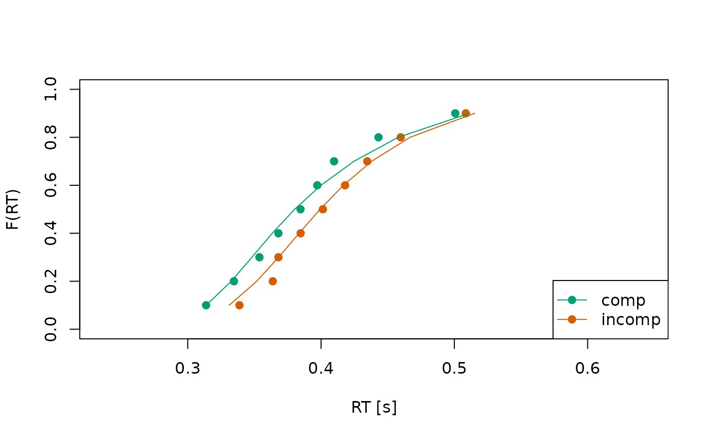
Circles indicate observed data while lines indicate the model’s predictions.
Extracting Parameter Estimates and Fit Statistics
Extracting the parameter estimates can be done via the
coef() method, which work with the objects returned by
estimate_dm().
all_coefs <- coef(all_fits)
print(all_coefs)
#> Object Type: coefs_dm
#>
#> ID muc b non_dec sd_non_dec tau A alpha
#> 1 1 4.274 0.446 0.308 0.022 0.020 0.114 5.294
#> 2 2 4.105 0.378 0.303 0.032 0.020 0.058 5.893
#> 3 3 5.425 0.433 0.307 0.019 0.059 0.025 4.446
#> 4 4 2.863 0.537 0.302 0.034 0.051 0.101 2.761
#>
#> (access the data.frame's columns/rows as usual)We can even make a quick visualization of the respective
distributions using the hist() method.
hist(all_coefs, bundle_plots = FALSE)
 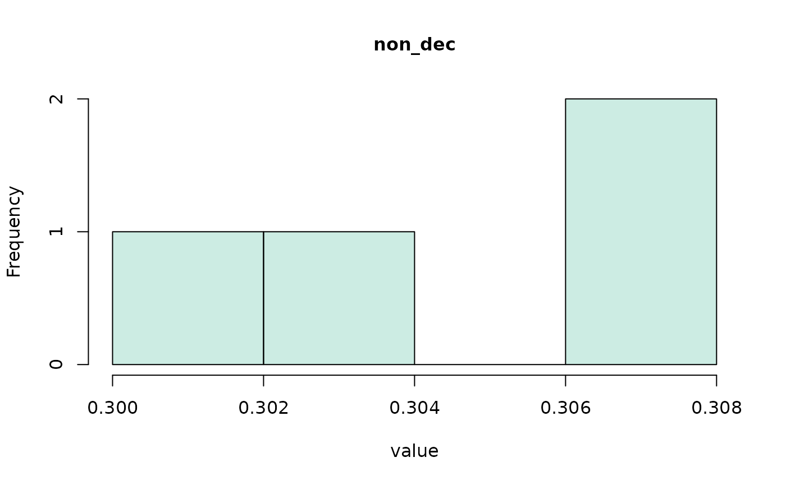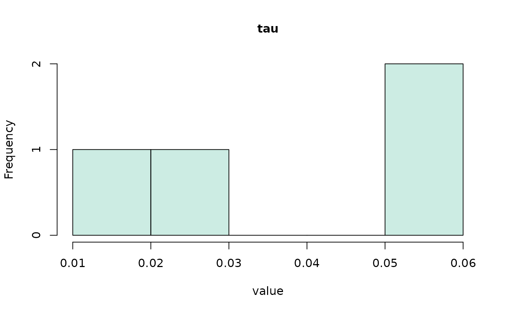
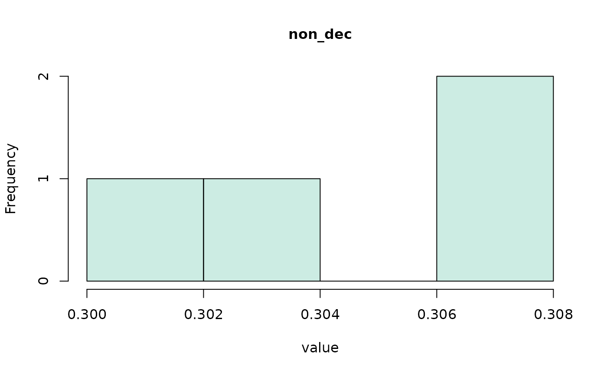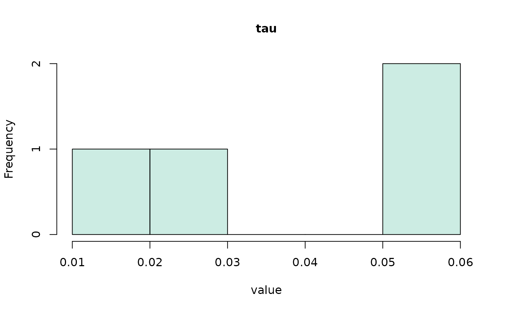
After fitting a model, we often want to quantify its fit—and maybe
compare the quantiative fit between several candidate models. To this
end, we can request several relative and absolute fit measures, using
calc_stats() and the argument
type = "fit_stats".
calc_stats(all_fits, type = "fit_stats")
#> Type of Statistic: fit_stats
#>
#> ID Log_Like Neg_Log_Like AIC BIC RMSE_s RMSE_ms
#> 1 1 418.653 -418.653 -823.307 -796.587 0.031 30.703
#> 2 2 384.298 -384.298 -754.596 -727.876 0.038 38.264
#> 3 3 508.641 -508.641 -1003.283 -976.563 0.017 17.422
#> 4 4 172.322 -172.322 -330.644 -304.008 0.039 38.599
#>
#> (access the data.frame's columns/rows as usual)The first few columns provide the (negative) log-likelihood, and the Akaike and Bayesian Information Criterion. The last two columns provide the RMSE statistic (in the unit of seconds and milliseconds).
A neat summary of the model, the optimization routine, the data, and
the parameter estimates can be obtained via the summary()
method.
summary(all_fits)
#> Fit approach: separately - classical
#> Fitted model type: dmc_dm, drift_dm
#> Optimizer: Nelder-Mead
#> Convergence: TRUE
#> N Individuals: 4
#> Average Trial Numbers:
#> 167 trials comp; 168 trials incomp
#> Cost Function: neg_log_like
#>
#> Parameter Summary: comp
#> muc b non_dec sd_non_dec tau a A alpha peak_l
#> mean 4.167 0.448 0.305 0.027 0.037 2 0.074 4.598 0.037
#> std_err 0.524 0.033 0.001 0.004 0.010 0 0.020 0.681 0.010
#>
#> Parameter Summary: incomp
#> muc b non_dec sd_non_dec tau a A alpha peak_l
#> mean 4.167 0.448 0.305 0.027 0.037 2 -0.074 4.598 0.037
#> std_err 0.524 0.033 0.001 0.004 0.010 0 0.020 0.681 0.010
#>
#> -------
#> Deriving PDFS:
#> solver: kfe
#> values: sigma=1, t_max=3, dt=0.0075, dx=0.02, nt=400, nx=100Experimental: Perform Bayesian Parameter Estimation
Starting with dRiftDM v.0.3.0, there is also the option
to perform Bayesian parameter estimation using DE-MCMC. Yet, this is
currently at an experimental stage, and the returned
mcmc_dm object type is not yet fully integrated within the
remaining dRiftDM framework.
We can request Bayesian parameter estimation using the argument
approach = "sep_b" or approach = "hier_b". In
the former case, the model is fitted separately per participant, in the
latter case, the model is fitted hierarchically.
The prior distributions can be parameterized using the arguments
lower, upper, means,
sds, shapes, and rates (see the
documentation of estimate_dm())
# DMC without variability in the non-decision time;
# makes it a bit easier to estimate, although it is still
# difficult, because trial numbers are low in the sample data set :)
ddm <- dmc_dm(var_non_dec = FALSE)
# lower and upper boundary for the prior distributions
l_u <- get_lower_upper(ddm)
mcmc_list <- estimate_dm(
drift_dm_obj = ddm,
obs_data = data,
approach = "sep_b",
lower = l_u$lower,
upper = l_u$upper,
verbose = 2,
n_chains = 40,
n_cores = 1, # increase to parallelize
burn_in = 150, # for the demo, usually a bit higher
samples = 150, # for the demo, usually a bit higher
seed = 1
)
#> Using the data supplied via the 'obs_data' argument.
#> Using optimizer 'DE-MCMC'.
#> Fitting the model separaetely to multiple participants using the Bayesian framework. For now, the result will be a list of 'mcmc_dm' objects.
#> Finding starting values...
#> Starting the sampling procedure
#> Finding starting values...
#> Starting the sampling procedure
#> Finding starting values...
#> Starting the sampling procedure
#> Finding starting values...
#> Starting the sampling procedureThis returns a list of mcmc_dm objects, one for each
individual.
one_mcmc <- mcmc_list[[1]]
one_mcmc
#> Sampler: DE-MCMC
#> Hierarchical: FALSE
#> No. Parameters: 6
#> No. Chains: 40
#> Iterations Per Chain: 150
coef(one_mcmc)
#> muc b non_dec tau A alpha
#> 4.43895842 0.64038802 0.26251248 0.06067285 0.08268417 6.89377463
plot(one_mcmc, bundle_plots = FALSE)

 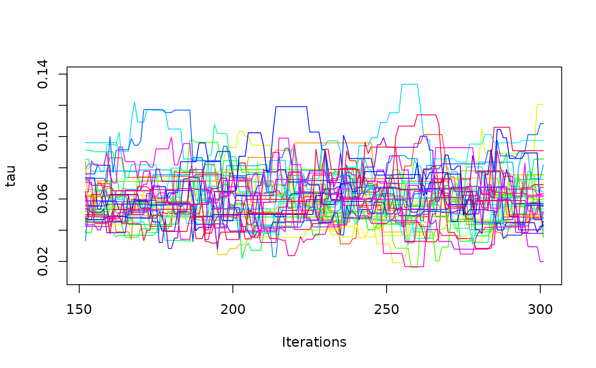
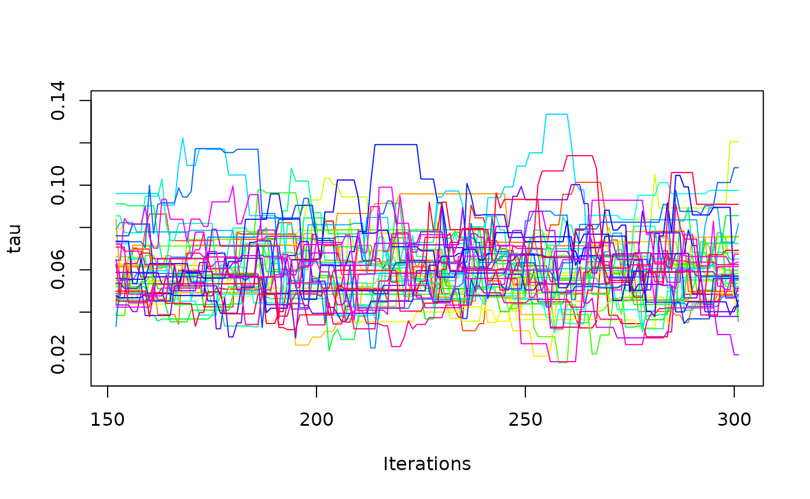

It is also possible to request hierarchical estimation.
mcmc_hier <- estimate_dm(
drift_dm_obj = ddm,
obs_data = data,
approach = "hier_b",
lower = l_u$lower,
upper = l_u$upper,
verbose = 2,
n_chains = 40,
n_cores = 1, # increase for speed-up
burn_in = 150, # for the demo, usually way higher
samples = 150, # for the demo, usually way higher
seed = 1
)Simulating Data
To simulate data based on a model, we can use the
simulate_data() function. The first argument takes the
model object. The second argument is a numeric (vector), defining the
number of trials per condition:
ddm <- ratcliff_dm() # a model for demonstration purpose
sim_1 <- simulate_data(object = ddm, n = 200)
head(sim_1)
#> RT Error Cond
#> 1 0.384 0 null
#> 2 0.453 0 null
#> 3 0.361 0 null
#> 4 0.355 0 null
#> 5 0.433 0 null
#> 6 0.737 0 nullThis returns a single synthetic data set for one “participant”. Note that the simulated response times are rounded to three digits per default.
By specifying the argument k, we can simulate multiple
synthetic data sets simultaneously. In this case, however, we must also
specify lower and upper bounds to define the simulation space when
drawing random parameter combinations per data set (see the
simulate_data documentation for more details):
sim_2 <- simulate_data(
object = ddm, n = 200, k = 2,
lower = c(muc = 1, b = .4, non_dec = .2),
upper = c(muc = 6, b = .8, non_dec = .4)
)This returns a list with the synthetic data sets and the corresponding parameter values:
head(sim_2$synth_data)
#> RT Error Cond ID
#> 1 0.442 0 null 1
#> 2 0.575 0 null 1
#> 3 0.497 0 null 1
#> 4 0.373 0 null 1
#> 5 0.372 0 null 1
#> 6 0.374 0 null 1
head(sim_2$prms)
#> ID muc b non_dec
#> 1 1 3.150769 0.5352176 0.2355121
#> 2 2 2.069268 0.4133454 0.2690531The returned data sets are in a format that can be passed directly to
estimate_model_ids(), making parameter recovery exercises
very easy.
Remark: Stripping Away “Unnecesary” Attributes and Class Labels
Many functions in dRiftDM return matrices or
data.frames. Often these returned objects are S3 objects with a custom
class label. In principle, this is great because it allows you to reuse
generic functions like plot(), print(), or
summary() as we saw above.
However, sometimes this also hides the true structure of the
underlying data type. Therefore, we provide the
unpack_obj() function, which allows you to strip away
unnecessary attributes and class labels. This can be useful, for
example, if you want to create your own plot or wrangle the data into a
particular format.
ddm <- dmc_dm()
traces <- simulate_traces(ddm, k = 2)
# although this object is essentially a list of matrices, the class label ...
class(traces)
#> [1] "traces_dm_list"
print(traces) # ... leads to nicely formatted output; but hides the underlying structure
#> Class(es): traces_dm_list
#>
#> Time space:
#> 0.000, 0.007, 0.015, 0.022 ... 3.000
#>
#> Condition: comp
#> ~> 0.000, 0.239, 0.287, 0.243 ... 0.676
#> ~> 0.000, -0.104, -0.137, -0.185 ... 0.639
#>
#> Condition: incomp
#> ~> 0.000, -0.005, 0.020, 0.032 ... 0.667
#> ~> 0.000, -0.128, -0.178, -0.106 ... 0.608
raw <- unpack_obj(traces) # provides the plain list of matrices
head(t(raw$comp))
#> [,1] [,2]
#> [1,] 0.0000000 0.0000000
#> [2,] 0.2387526 -0.1035851
#> [3,] 0.2865938 -0.1373298
#> [4,] 0.2428892 -0.1849793
#> [5,] 0.3130805 -0.3254528
#> [6,] 0.3192930 -0.3616110